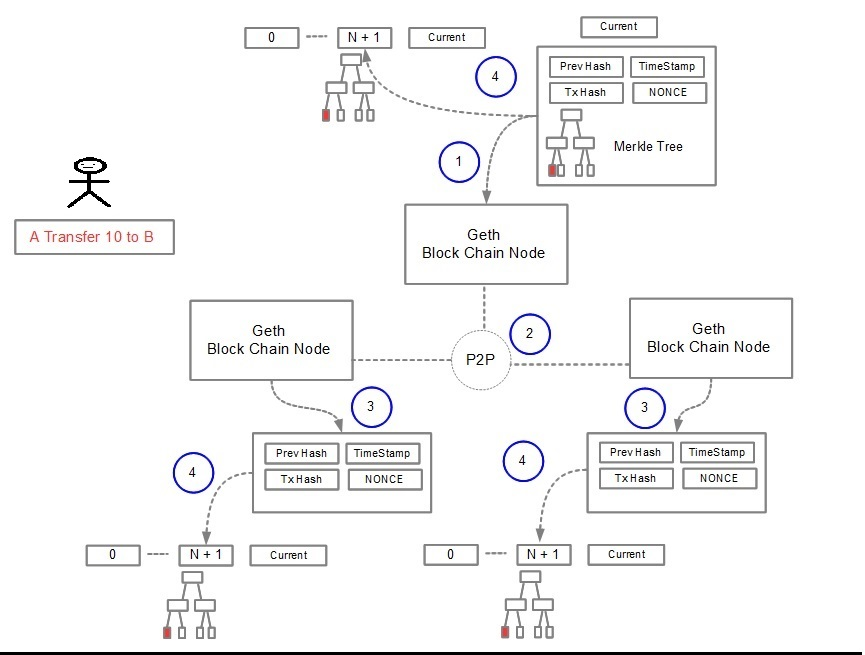

Block Chain
Where the nodes agree on the new block
- 1 The winning node was able to mine the new block
- 2 The block is sent to the other nodes
- 3 The nodes receive the block and validate the block:
- Check if the previous block referenced by the block exists and is valid.
- Check that the timestamp of the block is greater than that of the previous block[2] and less than 2 hours
into the future
- Check that the proof of work on the block is valid
- For all transaction in the block APPLY(Status,Transaction) -> Status' to the previous block state
- 4 Block is added to the chanin and mining of new block is started

[ Previous ] Block Chain [ Next ]